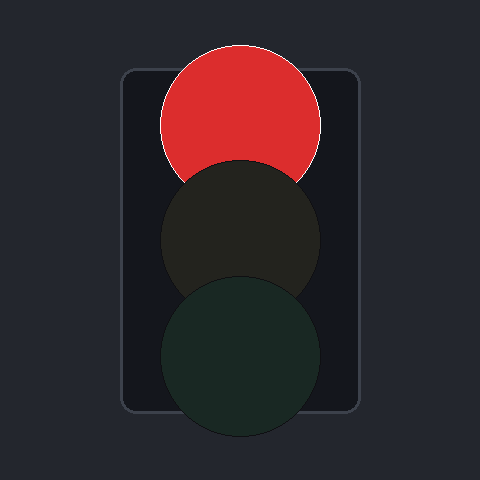
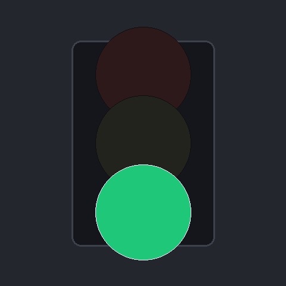
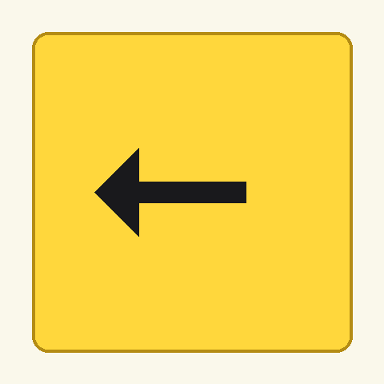
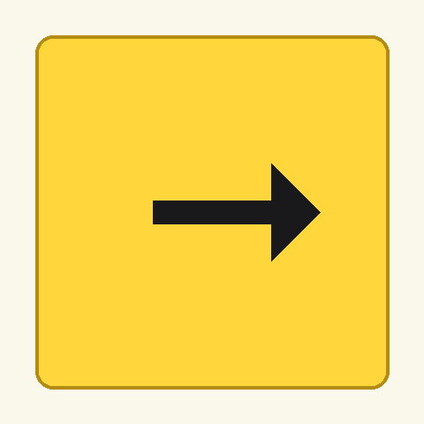

프로젝트 배경
자율주행 로봇이 복잡한 도로 환경에서 스스로 주행 방향을 결정하기 위해서는 시각 정보를 바탕으로 한 지능형 판단 모델이 필수적입니다.
그러나 일반적인 딥러닝 모델은 연산량이 많아 Jetson Nano와 같은 엣지 디바이스에서 실시간 제어에 활용하기에는 속도 지연의 한계가 있습니다.
자율주행 로봇이 복잡한 도로 환경에서 스스로 주행 방향을 결정하기 위해서는 시각 정보를 바탕으로 한 지능형 판단 모델이 필수적입니다.
그러나 일반적인 딥러닝 모델은 연산량이 많아 Jetson Nano와 같은 엣지 디바이스에서 실시간 제어에 활용하기에는 속도 지연의 한계가 있습니다.
5종의 교통 표지판을 높은 정확도로 분류하는 경량 딥러닝 모델을 설계하고, 그 결과를 로봇의 모터 제어와 직접 연동하는 알고리즘 구현
MobileNetV2 기반 저연산 고효율 모델 설계
전이 학습을 통한 높은 분류 정확도 달성
판단-동작 연계 알고리즘 구현
MobileNetV2 분류층(Classifier) 수정 및 전이 학습
PyTorch DataLoader 기반 전처리 및 학습 파이프라인
모델 추론 결과와 모터 제어의 알고리즘 일체화
5종의 교통 표지판에 대해 각 클래스당 15장 이상의 이미지를 직접 촬영 및 수집하여 총 75장 이상의 학습 데이터셋을 구축했습니다. 다양한 조명 조건과 각도에서 촬영하여 모델의 일반화 성능을 확보했습니다.




전이 학습을 통해 제한된 데이터셋에서도 높은 정확도를 달성했습니다. Feature Extractor 동결 전략으로 빠른 학습 수렴과 과적합 방지를 실현했습니다.
카메라 영상 입력부터 모터 제어까지 실시간 파이프라인으로 연결됩니다.
CSI 카메라에서 프레임 캡처
frame = camera.read()
Resize + Normalize + Tensor 변환
input = transform(frame)
MobileNetV2로 클래스 예측
class_id = model(input).argmax()
클래스별 동작 매핑
action = ACTION_MAP[class_id]
좌/우 모터 속도 설정
set_motors(left, right)
엣지 디바이스의 성능 한계라는 문제를 정의하고, 이를 해결하기 위한 기술적 결정과 그 근거를 논리적으로 연결했습니다.
Jetson Nano는 4GB RAM과 128 CUDA 코어의 제한된 연산 자원을 가지고 있어, ResNet이나 VGG 같은 대형 모델로는 실시간 추론이 불가능합니다.
파라미터 수 3.4M으로 VGG(138M) 대비 40배 이상 경량화된 MobileNetV2를 선택하여 실시간 추론 속도를 확보했습니다.
기존 Conv를 Depthwise + Pointwise로 분리하여 연산량 8~9배 감소
Expand → Depthwise → Project 구조로 메모리 효율 극대화
저차원 출력에서 ReLU 제거로 정보 손실 방지
import torch
import torch.nn as nn
from torchvision import models
# 사전 학습된 MobileNetV2 로드
model = models.mobilenet_v2(pretrained=True)
# Feature Extractor 동결 (학습 제외)
for param in model.features.parameters():
param.requires_grad = False
# 마지막 분류층을 5개 클래스로 변경
num_classes = 5 # 적색, 청색, STOP, 좌회전, 우회전
model.classifier = nn.Sequential(
nn.Dropout(p=0.2),
nn.Linear(model.last_channel, num_classes)
)
# 손실 함수 및 옵티마이저 설정
criterion = nn.CrossEntropyLoss()
optimizer = torch.optim.Adam(
model.classifier.parameters(),
lr=0.001
)# 클래스별 동작 매핑 테이블
ACTION_MAP = {
0: ('stop', 0, 0), # 적색 신호 → 정지
1: ('forward', 0.5, 0.5), # 청색 신호 → 전진
2: ('stop', 0, 0), # STOP 표지판 → 정지
3: ('left', 0, 0.5), # 좌회전 → 좌측 회전
4: ('right', 0.5, 0) # 우회전 → 우측 회전
}
def inference_and_control(frame, model):
# 전처리 및 추론
input_tensor = transform(frame).unsqueeze(0).to('cuda')
with torch.no_grad():
class_id = model(input_tensor).argmax(dim=1).item()
# 동작 매핑 및 제어
action, left, right = ACTION_MAP[class_id]
set_motors(left, right)
return actionAI 모델 설계부터 디바이스 포팅, 실시간 제어까지의 Full-Cycle 개발 과정을 직접 경험하며 검증을 완료했습니다.
MobileNetV2 아키텍처의 경량화 원리와 전이 학습 기법 이해
PyTorch DataLoader를 활용한 효율적인 데이터 파이프라인 구축 방법
AI 추론 결과를 하드웨어 제어로 연결하는 알고리즘 설계 경험
엣지 디바이스에서의 실시간 AI 시스템 최적화 방법론 습득